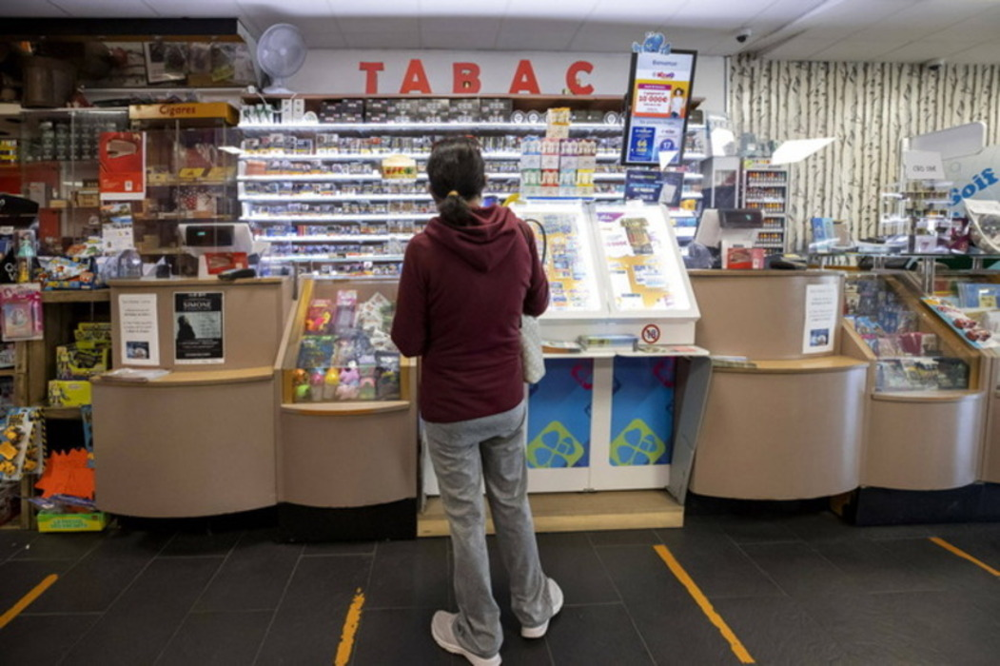

Substitut ou incitation au tabagisme ?
Découvrez notre cartographie des controverses ! Celle-ci vise à fournir une vue d'ensemble du sujet et explore les points de vue divergents des différents acteurs impliqués dans le débat. Elle identifie alors les principaux arguments et les preuves scientifiques qui soutiennent ou réfutent chaque position, ainsi que les facteurs sociaux, économiques et politiques qui influencent la discussion.
Avant de se plonger dans les détails de la controverse entourant la CE, il est important de définir ce qu'elle implique.
Afin de confirmer ou de réfuter les informations récoltées lors des recherches du rapport, nous avons réalisé un sondage et compilé nos résultats. Ceux-ci ont alors été comparés à des études externes pour révéler un phénomène d'inversion des tendances.
Découvrir l'historique de la controverse liée à la cigarette classique semble pertinente dans l'étude de l'historique de la cigarette électronique. En effet, on remarque (sur une période bien plus courte) que les deux dispositifs sont introduits comme des instances positives puis se révèlent être dangeureuses sur le long terme, menant à des taxes et interdictions sévères. On retrouvera en évidence les dates communes aux deux historiques.
D’un côté, on a le discours rassurant des vendeurs et distributeurs de cigarette électronique, d’un produit qui n’est pas dangereux pour la santé, qui permet d’arrêter de fumer, et qui est profitable à l’économie du pays. Mais d’un autre, on constate aussi la méfiance médicale, de nombreuses incertitudes qui poussent le corps médical à conseiller des dispositifs médicaux tels que les patchs plutôt que la cigarette électronique. A notre échelle, le seul moyen de confirmer ou réfuter ces informations est d’interviewer des acteurs de la controverse.
La cigarette électronique est légalement disponible aux adultes, et n’est pas un dispositif de santé. Le cadre légal relatif à sa distribution est régi par le Code de la Consommation et par le Code de la Santé Publique. Selon les études scientifiques qui ont été menées en France, il n’y aurait pas de risque de santé à proprement parler, mais des incertitudes résident quant à la composition des liquides par exemple. D’autre part, un rapport de l’OMS sur le sujet indique que : “Les effets à long terme de l’utilisation des inhalateurs électroniques de nicotine restent largement inconnus, cependant de plus en plus de bases factuelles révèlent que ces produits ne sont pas inoffensifs.”2 L’avenir du dispositif est donc imprévisible mais semble suivre une voie similaire à celle de la cigarette classique. 1,3.
Pour la cigarette électronique, en France et en Europe, il n’existe aucune réelle réglementation parce que le sujet est encore flou. Il est difficile de trouver des informations sûres, et il existe énormément de points de vue divergents sur la question. En effet, on s’interroge : ce n’est pas un dispositif médical, mais cela aiderait à arrêter de fumer ? Il existe plusieurs lobbys qui modulent l’économie de la cigarette électronique. Le lobby de l’industrie du tabac réclame des taxes sur la cigarette électronique, car la vente de cigarettes est en chute. Le lobby des laboratoires pharmaceutiques souhaiterait que la CE soit un dispositif médical, car cette industrie représente un bénéfice non négligeable. En effet, le chiffre d’affaires de France de la CE dépasse 100 millions d’euros, un chiffre supérieur à l’ensemble des ventes de substituts nicotiniques. Enfin, le lobby des fabricants de cigarettes, lui, dépend des décisions gouvernementales à propos de cette technologie. Néanmoins, ce nouveau marché en pleine effervescence est profitable à l’économie, et ce lobby se sert de ses arguments : un produit sain, avec des arômes naturels (pour les produits vendus en France du moins), qui permet de solutionner le problème de santé publique qu’est le tabac, et dont la distribution sur le territoire créée de nombreux emplois4.
En plus de notre sondage, nous avons récolté le point de vue de divers experts de la santé et de la vente de cigarette et de cigarette électronique.
Les patients qui viennent pour des problèmes d’addiction à la nicotine ont souvent des prescriptions puisque les substituts nicotiniques sont remboursables par la sécurité sociale. Il y en a pas mal qui se posent des questions, surtout pendant le mois anti-tabac qui permet de sensibiliser les gens. En tant que pharmacien, on a ce rôle uniquement par rapport aux substituts nicotiniques parce qu’on n'a pas le droit de délivrer des cigarettes électroniques. On prescrit uniquement du sevrage tabagique par les substituts nicotiniques que sont les patchs, les pastilles et les gommes. On sensibilise les gens qui nous posent des questions, qui n’ont pas forcément pris la décision, mais qui ont envie d'arrêter. Les gens qui passent à la cigarette électronique ne reviennent pas. Je n'ai pas l'impression qu'ils reviennent à la cigarette classique, ce qui est un bon point, mais ça provoque une autre addiction. Mon rôle c'est d’assurer la bonne santé. Dans la mesure où ça n'entraîne pas de problème de santé, il vaut mieux être addict à la cigarette électronique qu'à l'alcool ou à la drogue. L'addiction en elle-même, tant qu'elle est pas néfaste dans la vie, et sans conséquence dans la vie au quotidien, elle n'est pas grave. Je n’ai pas fait de recherches sur la composition des e-liquides, mais je sais que ça permet d’éliminer les produits les plus nocifs de la cigarette. Ca dépend de l'origine des cartouches, et ce n’est pas non plus sans risque. Remplacer quelque chose qui est nocif par autre chose de potentiellement nocif qu'on ne connaît pas encore très bien, ça me laisse un peu perplexe. Surtout qu’on a l'impression que la cigarette électronique entraîne une autre dépendance. Les inconvénients, c’est juste au niveau du comportement. Si on arrive à prouver qu'il n'y a pas de problème pour la santé, alors il n’y a pas de gros inconvénient.
On distingue 3 types de dépendance : dépendance comportementale (pause café, soirée, etc), dépendance psychologique : le besoin de consommer selon son humeur, dépendance chimique. La nicotine n'est pas une substance nocive mais elle provoque la dépendance. La vapoteuse peut donc être un outil pour le sevrage tabagique même si son utilisation n'est pas validée par la HAS. C'est évidemment mieux de ne rien consommer mais on dit que le risque pour la santé de vapoter est 1000 fois moins important que celui de fumer.
Après, il y a la puff qui soi-disant incite les jeunes. Mais de toute façon les jeunes, on n'a pas le droit de leur vendre, donc c’est vite vu. Quand la puff est arrivée sur le marché, ça a été un effet de mode, tout le monde en voulait parce qu'il y avait des goûts. Depuis, ça s’est calmé, surtout depuis que le texte les interdisant a été adopté. On continue à en vendre, pour déstocker, mais beaucoup moins. Pharmacienne Je ne sais pas si c’est un effet de mode. C'est surtout les jeunes, les jeunes adultes, les ados qui vont dicter les modes. Il faudrait aller interviewer et poser la question aux jeunes. Vendeur de CE Mais on voit aussi beaucoup de jeunes qui, influencés par leurs amis ou par l'effet de mode, se mettent à la cigarette électronique sans nicotine. C'est un phénomène intéressant à observer. Addictologue Je trouve qu’on observe cet effet uniquement chez les jeunes. Médicalement je préfère qu'ils vapotent plutôt qu'ils fument.
Après, il y a la puff qui soi-disant incite les jeunes. Mais de toute façon les jeunes, on n'a pas le droit de leur vendre, donc c’est vite vu. Quand la puff est arrivée sur le marché, ça a été un effet de mode, tout le monde en voulait parce qu'il y avait des goûts. Depuis, ça s’est calmé, surtout depuis que le texte les interdisant a été adopté. On continue à en vendre, pour déstocker, mais beaucoup moins.
Je ne sais pas si c’est un effet de mode. C'est surtout les jeunes, les jeunes adultes, les ados qui vont dicter les modes. Il faudrait aller interviewer et poser la question aux jeunes. Vendeur de CE Mais on voit aussi beaucoup de jeunes qui, influencés par leurs amis ou par l'effet de mode, se mettent à la cigarette électronique sans nicotine. C'est un phénomène intéressant à observer. Addictologue Je trouve qu’on observe cet effet uniquement chez les jeunes. Médicalement je préfère qu'ils vapotent plutôt qu'ils fument.
Je ne sais pas si c’est un effet de mode. C'est surtout les jeunes, les jeunes adultes, les ados qui vont dicter les modes. Il faudrait aller interviewer et poser la question aux jeunes.
Mais on voit aussi beaucoup de jeunes qui, influencés par leurs amis ou par l'effet de mode, se mettent à la cigarette électronique sans nicotine. C'est un phénomène intéressant à observer. Addictologue Je trouve qu’on observe cet effet uniquement chez les jeunes. Médicalement je préfère qu'ils vapotent plutôt qu'ils fument.
Mais on voit aussi beaucoup de jeunes qui, influencés par leurs amis ou par l'effet de mode, se mettent à la cigarette électronique sans nicotine. C'est un phénomène intéressant à observer.
Je trouve qu’on observe cet effet uniquement chez les jeunes. Médicalement je préfère qu'ils vapotent plutôt qu'ils fument.
En Angleterre, la cigarette électronique est considérée comme un dispositif médical et est même remboursée par la sécurité sociale. En France, on n'en est pas encore là, mais certaines mutuelles proposent des forfaits pour les achats de cigarette électronique. C'est un domaine en pleine évolution, avec des réglementations européennes qui dictent beaucoup de choses, mais aussi des lois françaises, notamment la TPD (Tobacco Products Directive), qui imposent des restrictions.
Comme la CE n’est pas limitée par la loi Evin, qui limite la cigarette dans les lieux publics, c’est plus dur de s’empêcher de fumer pour les fumeurs de cigarettes électroniques qui l'ont en permanence sur eux. Ils peuvent l'utiliser non stop toute la journée si leur activité le leur permet.

Depuis quelques années, on a des baisses de volumes au niveau des ventes de tabac, mais ce n’est pas dû qu’à la CE. C’est aussi à cause de la contrebande, qui est difficilement quantifiable. La baisse qu'il peut y avoir, c'est certaines personnes qui, financièrement, ne peuvent plus payer de cigarettes parce que ça devient trop cher. Je pense que si le prix continue à augmenter, les ventes vont vraiment chuter parce que tout le monde ne peut plus en acheter, c'est devenu un gros budget.
Les lobbies du tabac ont une influence énorme, même au niveau international. En Thaïlande, par exemple, ils ont réussi à faire interdire la cigarette électronique. C'est un combat constant, surtout quand on voit que les périodes comme septembre, janvier et novembre sont cruciales pour nous, avec la rentrée scolaire et le mois sans tabac.
Pour être un dispositif médical, il faut que les organismes qui fabriquent les CE demandent l'autorisation à l'agence nationale du médicament. Il faut lui présenter un gros dossier, étudiant tout le processus de métabolisation dans l'organisme. Le processus est long et coûte cher. Comme il y a beaucoup de fabricants, je ne suis pas sûre qu'ils aient envie d'entamer cette démarche là vu que je ne pense pas qu'ils y gagneraient financièrement.
Les études ne sont pas toutes fiables ce qui laisse la place aux lobbys du tabac qui sont très puissants.
J’ai remarqué que la cigarette électronique a été une alternative pour arrêter de fumer pour beaucoup de nos clients qui étaient gros fumeurs, que ce soit pour des problèmes de santé, notamment des clients âgés, ou financiers, parce que la cigarette devient très chère. Cependant, certains ne feront jamais la transition avec la cigarette électronique. Ils ont testé, et ça n’a pas marché. Pour eux, vapoter c’est complètement différent de fumer.
Le client type pour nous, ce sont généralement des personnes qui ont fumé pendant des années et qui viennent chez nous avec l'intention sérieuse d'arrêter de fumer. On leur propose principalement deux doses de nicotine : 12 mg pour ceux qui fument plus d'une dizaine de cigarettes par jour, et 6 mg pour ceux qui en fument moins. Ce qui est intéressant, c'est qu'on voit des clients arriver chez nous du jour au lendemain, décidant d'arrêter de fumer et de passer à la cigarette électronique. C'est un investissement initial, mais souvent ils voient ça comme un moyen de dépenser moins sur le long terme. Notre objectif, c'est d'aider les clients dans leur transition, en leur fournissant les bons conseils et les bons produits.
Quand la cigarette électronique est apparue, j'ai trouvé que c'était une très bonne chose pour les personnes qui n'arrivaient pas à se sevrer de la partie comportementale de la cigarette. À l'heure actuelle, je pense que la CE n'est pas du tout une recommandation ou une alternative pour le sevrage. Car, pour moi, les gens qui ont la cigarette électronique ne sont pas forcément intéressés par l'arrêt du tabac. Le principal sevrage tabagique que l'on utilise, ce sont les patchs, complétés par des gommes ou des tablettes qui permettent de de délivrer la nicotine de manière instantanée et donc de mimer le bonus de nicotine apporté par la cigarette. Si on ne parle que des dispositifs, on peut les délivrer sans ordonnance sur conseil. Les autres sevrage, c’est les gommes et les pastilles orodispersibles. J'ai des personnes qui depuis des années prennent des gommes et les utilisent au quotidien parce qu’il y a de la nicotine dedans. De la même manière que, dans la cigarette électronique, il n’y a pas tout ce qui est néfaste pour la santé, mais on retrouve toujours cette addiction à la nicotine.
Maintenant, avec toutes ces réglementations qui changent constamment, comme la directive TPD, c'est difficile de savoir ce qui nous attend en 2024. Mais on reste optimistes, et on continue de faire de notre mieux pour accompagner nos clients dans leur arrêt du tabac, en garantissant la qualité et la sécurité de nos produits.
Dans cet épisode captivant, plongez au cœur de l'histoire de la cigarette électronique à travers un voyage temporel qui explore ses origines, son développement et ses implications contemporaines. Découvrez comment la CE est devenue une alternative moderne à la cigarette traditionnelle, mais aussi comment elle a suscité débats et controverses. Des témoignages de professionnels de la santé et de spécialistes du domaine vous éclairent sur les enjeux médicaux et sociaux liés à cette technologie. Explorez les nuances de la cigarette électronique et interrogez-vous sur son avenir dans notre société en constante évolution.
Découvrez notre équipe de spécialistes en la matière.
Le chef tavu
Ta biblio était parfaite
Bien vu les contacts
T'as bien skié ?
C'est moi